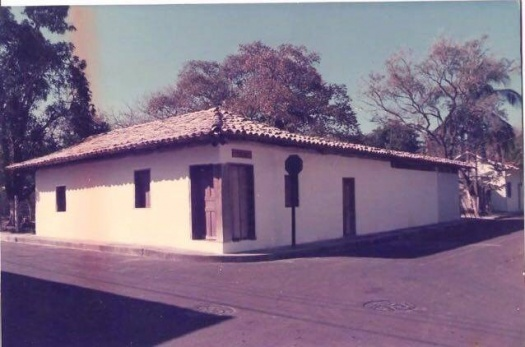

Lugares de interés
Museo del Sabanero

Los sabaneros son los vaqueros costarricenses. Su figura es una de las más reconocibles de la cultura popular del país.
Parque Nacional Rincón de la Vieja
 Esta gran zona protegida de Guanacaste está dominada por el volcán que le da nombre. La belleza natural de sus alrededores te dejará fascinado.
Esta gran zona protegida de Guanacaste está dominada por el volcán que le da nombre. La belleza natural de sus alrededores te dejará fascinado.